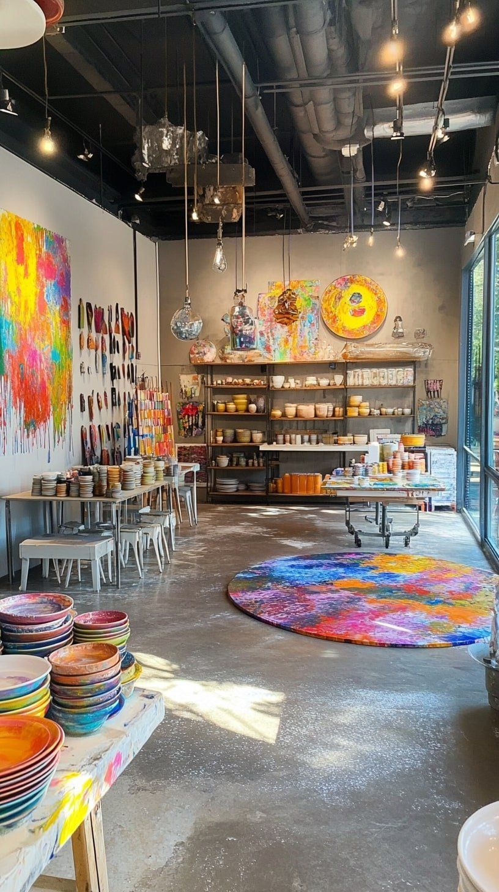
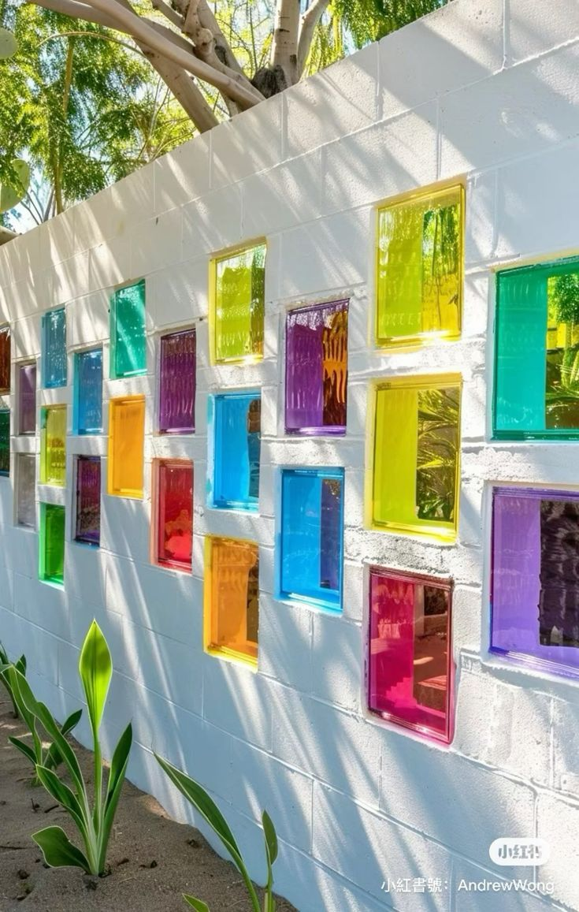

Behind the Studio:
Where Every Piece Begins
Step inside ResinLux Studio — explore our creative space, meet the artisans, discover our daily rituals, the tools we swear by, and the philosophy that turns raw resin into heirloom art. An intimate look at the heartbeat of everything we make.

Our Studio Space
Nestled in a converted Victorian warehouse in the heart of the city, ResinLux Studio is a living, breathing creative organism. Natural light floods in through steel-framed skylights. The scent of fresh resin mingles with the warmth of raw timber. Every corner is arranged to inspire.
-
2,400 sq ft of creative space — Divided into pour zones, curing rooms, finishing stations, a photography suite, and a client consultation lounge.
-
Industrial ventilation system — Purpose-built extraction keeps fumes safely managed so artists can work comfortably for full 8-hour studio days.
-
Climate-controlled curing room — Held at a constant 22°C and 45% humidity, our curing room guarantees perfect results regardless of the season outside.
-
Materials library — Over 400 pigments, powders, inclusions, and specialty resins are catalogued and accessible to every artist in the studio.
-
Client gallery wall — A rotating display of commissioned and studio pieces lines the entry corridor — inspiration for every visitor who walks through our doors.
-
Workshop classroom — Seats 12 students with individual pour stations, overhead mirrors, and a live-feed monitor screen so every step can be seen clearly.

A Day in the Studio
From the first pour of the morning to the final polish at day's end — six defining moments that make up a typical creative day at ResinLux.
The People Behind the Art
Every piece that leaves ResinLux is the product of human hands, trained eyes, and genuine passion. Meet the artists who bring the studio to life every day.
Priya Sharma
Founder & Studio Director7 years of resin mastery. Priya founded ResinLux after leaving a corporate design career and has since built it into one of the UK's most celebrated resin art studios.
Marcus Bell
Lead Resin SculptorSpecialising in large-format river tables and architectural installations. Marcus brings a structural engineer's precision to the craft of resin art.
Misba
Colour & Jewellery LeadOur colour theorist and jewellery specialist, Layla's palette sensibility elevates every commission. Her geode pendants have a 6-week waiting list.
James Tran
Finishing & Polishing SpecialistJames transforms cured resin from dull to mirror-bright. His wet-sanding and polishing process takes each piece through nine progressive grits — the result is always flawless.
Our Studio Philosophy
Six principles that guide every decision we make — from which resin we stock to how we pack a delivery.
Craft Over Speed
We never rush a piece. Every commission has the time it needs. We believe that truly excellent work cannot be produced under artificial time pressure — so we quote realistic timelines and protect creative space fiercely.
Transparency Always
We share every stage of a commission with our clients — from initial pigment testing to curing photos and pre-delivery inspection images. You always know exactly what you're receiving, before it arrives.
Sustainable Materials
We source low-VOC bio-based resins wherever possible. All packaging is recycled or biodegradable. Waste resin is cured in silicone moulds and donated to community art projects rather than sent to landfill.
People-First Culture
Artist wellbeing is not an afterthought — it's central to everything. Our studio provides health-grade PPE, mandatory breaks, ergonomic workstations, and a mental-health-aware work culture that celebrates creative individuality.
Precision in Everything
We weigh every component to 0.1g accuracy. We log every pour temperature. We document every commission with photographs at every stage. This obsessive precision is what allows us to reproduce successful results and learn from every challenge.
Continual Learning
The resin world evolves constantly — new formulations, new pigment technologies, new tools. Every artist at ResinLux dedicates at least four hours per week to experimentation, technique development, and material research. We never stop learning.
The Tools We Rely On
Every artist is only as good as the tools they trust. At ResinLux Studio we've tested hundreds of products over seven years and landed on a core kit that has never let us down. These are the non-negotiables in our studio.
-
Ohaus Scout Digital Scale — 0.1g precision, 5kg capacity. We have twelve of these in the studio — one per workstation. Accurate ratio mixing is non-negotiable.
-
California Air Tools Pressure Pot (2.5 gal) — Used for all jewellery and mould casting. Eliminates micro-bubbles invisible to the naked eye.
-
Mirka Abranet Wet/Dry Pads — 400 to 3000 grit progression. Leaves a scratch-free surface for polishing compound to work on.
-
Bosch GEX 125-150 AVE Orbital Sander — Variable speed, dust-extracted, vibration-dampened. Our finishing artists use these for 3–4 hours daily without fatigue.
-
Dremel Versatip Butane Torch — Adjustable flame intensity, piezo ignition, no lighter needed. The most controllable studio torch we've tested.
-
Meguiar's Ultimate Compound — Our polish of choice after fine sanding. One pass brings resin from satin to a deep, glass-like mirror finish.

Seven Years of Studio Milestones
From a single workbench in a spare room to a 2,400 sq ft professional studio — the milestones that shaped ResinLux into what it is today.
Studio Founded
Priya Sharma poures her first commissioned piece from a kitchen workbench. The first sale: a set of teal and gold coasters for a local interior designer. The waiting list starts within two weeks.
First Commercial Space
ResinLux moves into a 300 sq ft studio unit. Marcus Bell joins as the first full-time artist. First corporate gift commission — 200 personalised coasters for a London fintech company's rebrand launch.
Workshop Programme Launched
The first public workshops sell out within 24 hours. Layla Hassan joins to lead jewellery design. The studio expands to 800 sq ft. First geode river table delivered — a 2-metre dining centrepiece.
Interior Installations Begin
ResinLux completes its first commercial interior installation — a 6-panel feature wall for a boutique hotel in Manchester. The project cements the studio's reputation in the architectural interiors market.
Award-Winning Year
ResinLux wins Best Resin Art Studio at the UK Craft Awards and the Sustainable Artisan Prize. Press coverage in Homes & Gardens and Dezeen. The studio team grows to 8 artists.
Current Warehouse Studio
The move to the current 2,400 sq ft Victorian warehouse. Pressure pot room, photography suite, and client gallery all come online. The team reaches 12 artists. Online workshop programme launches globally.
What's Next
A dedicated international shipping programme, a materials subscription box, and an in-studio residency for emerging resin artists are all in development. The best work is always ahead of us.